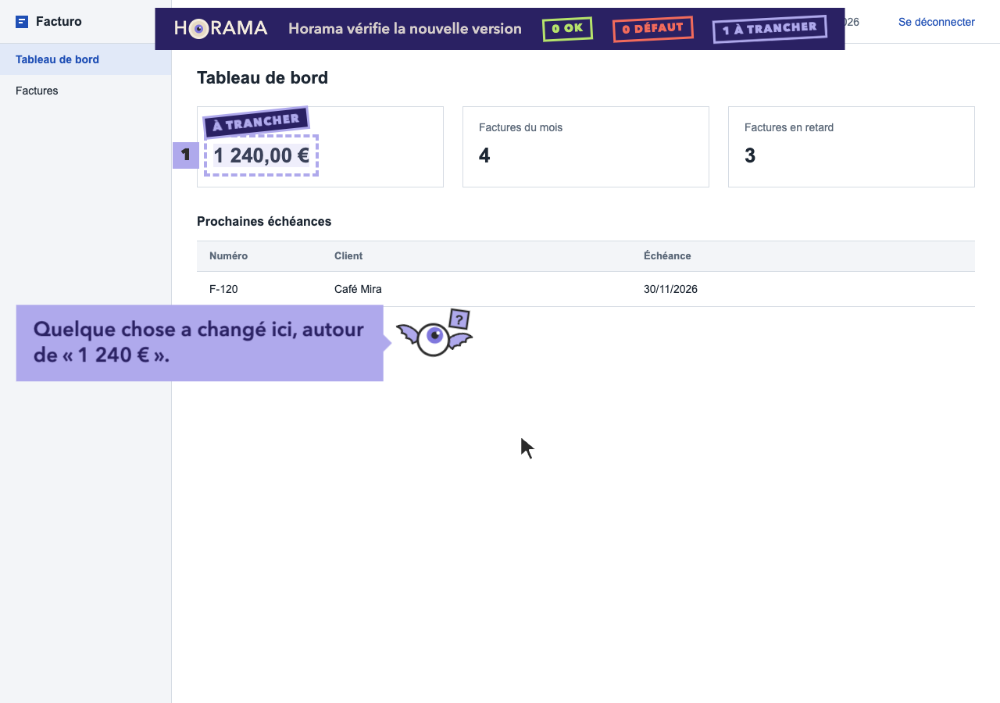
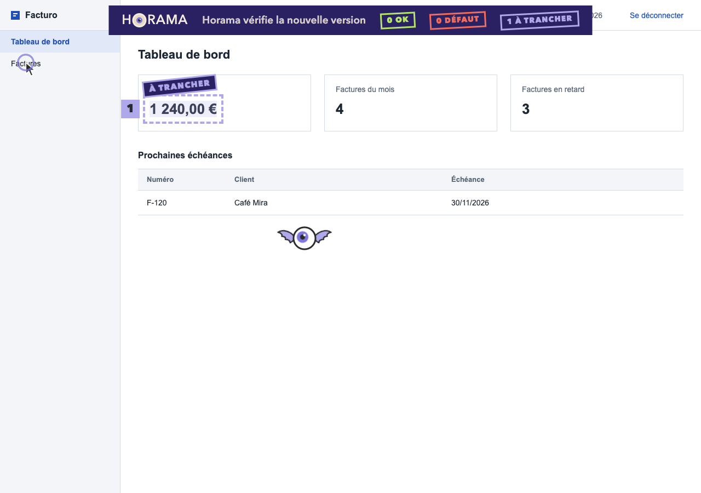
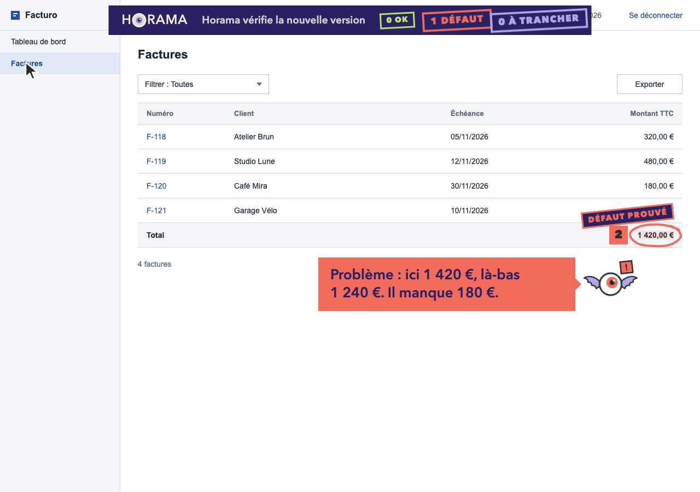
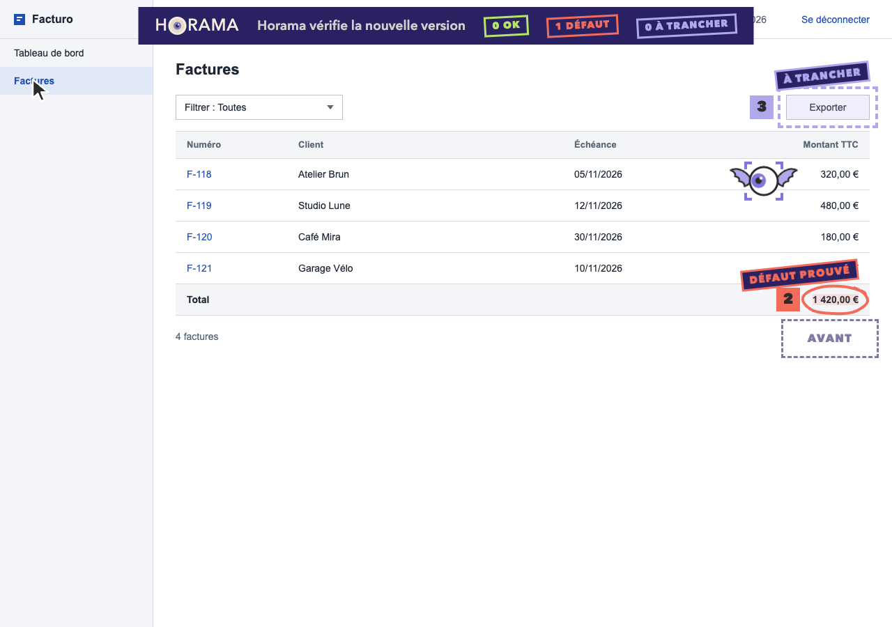
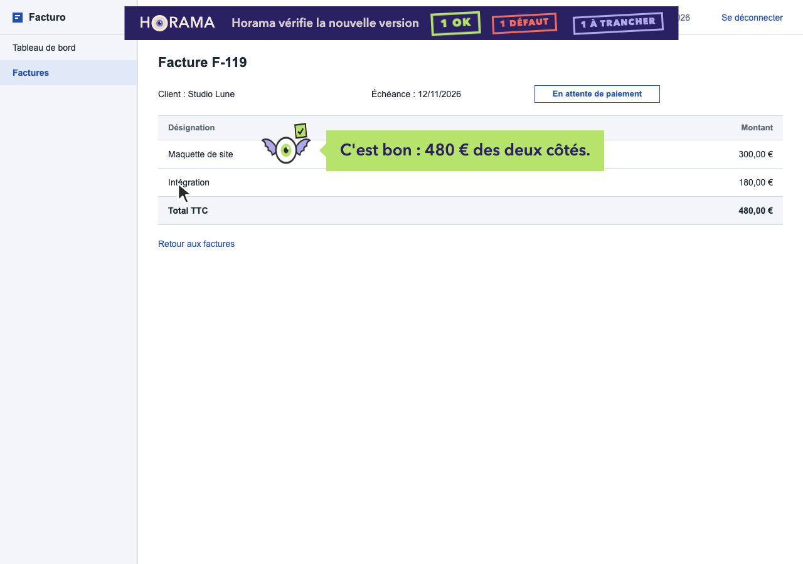
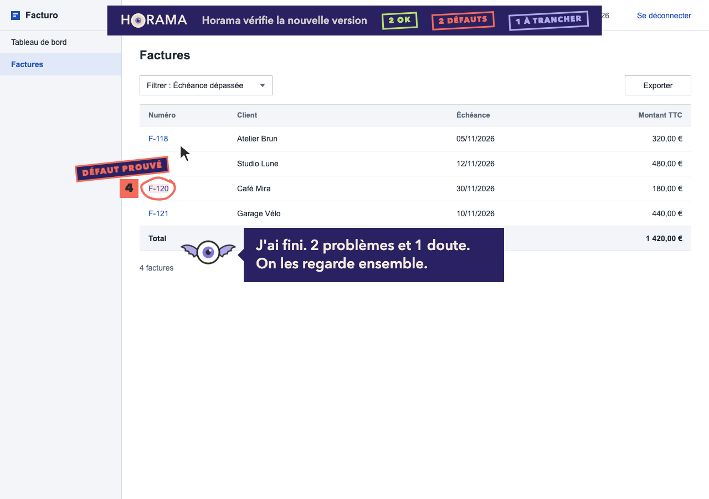
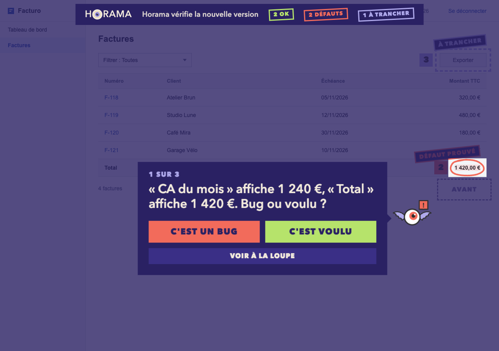
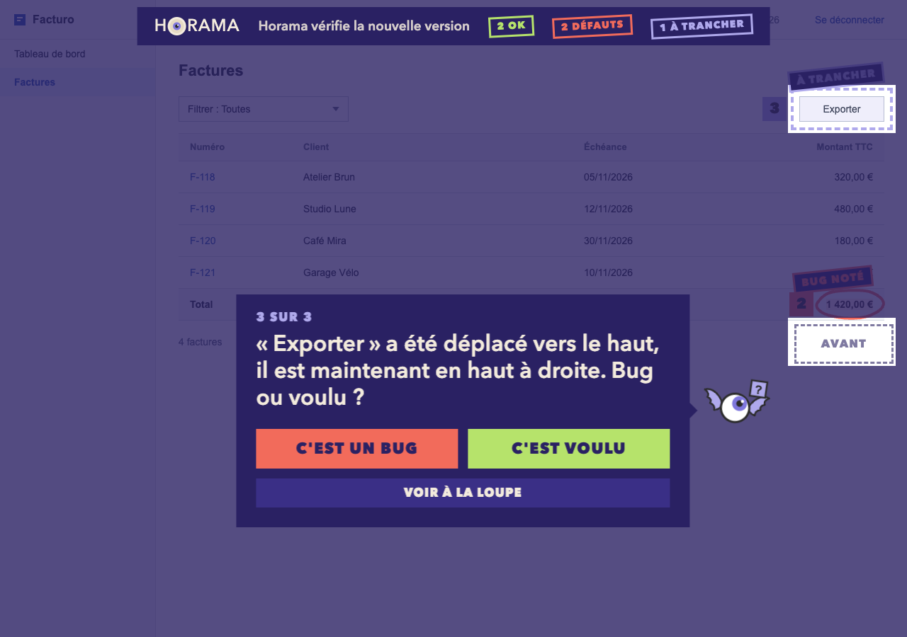
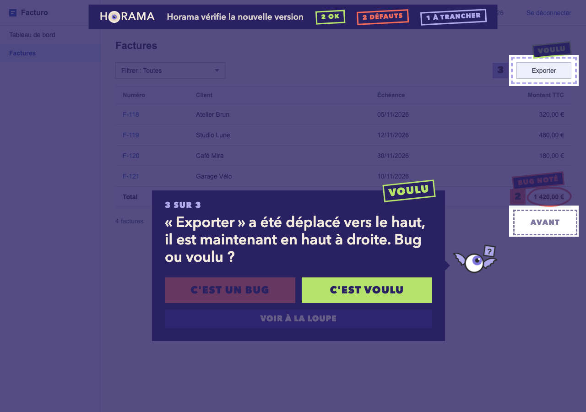
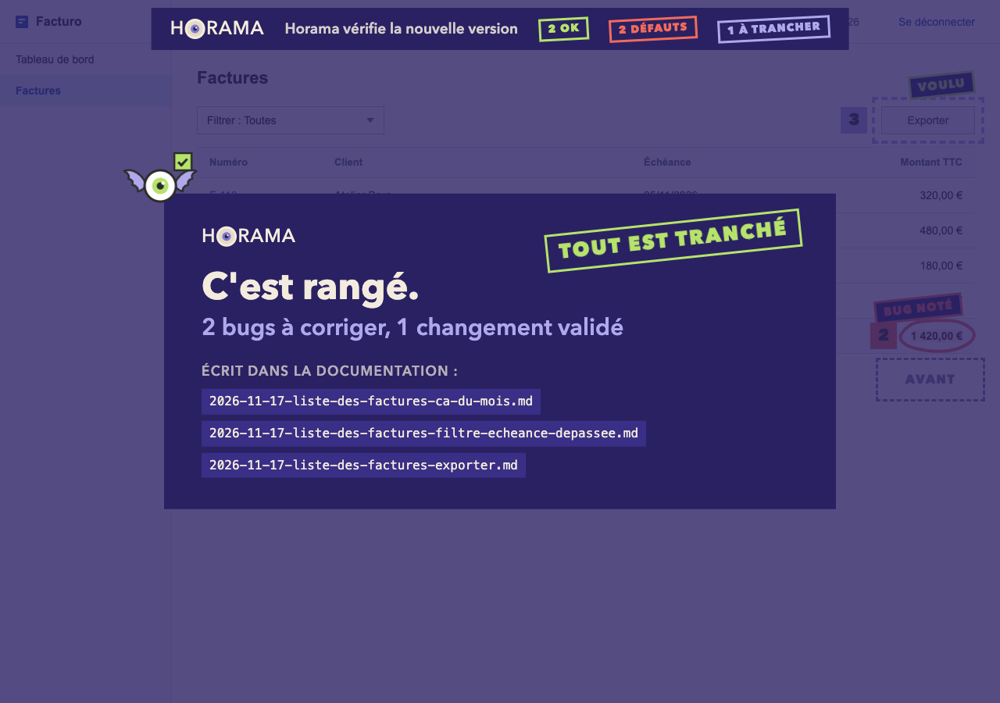

Témoins du parcours réel 2026-11-17-15h23-68e7 (agent H, Facturo en ligne v13, direction artistique d'Inès, zone de page imposée, settle_s 1,2 s). En base : passage verifie, 12 événements, 4 captures, 3 C4, 3 décisions. Détail : docs/tests/2026-11-17-j4-jonction.md.









